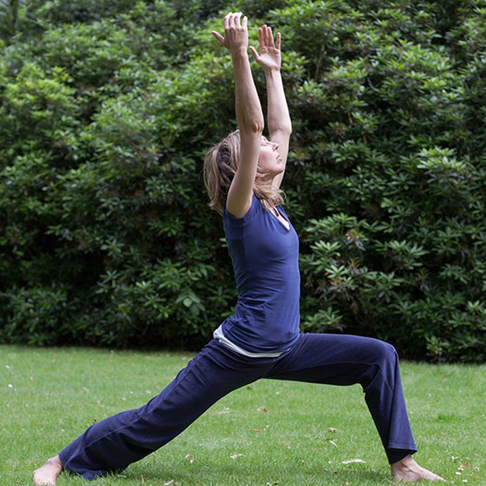
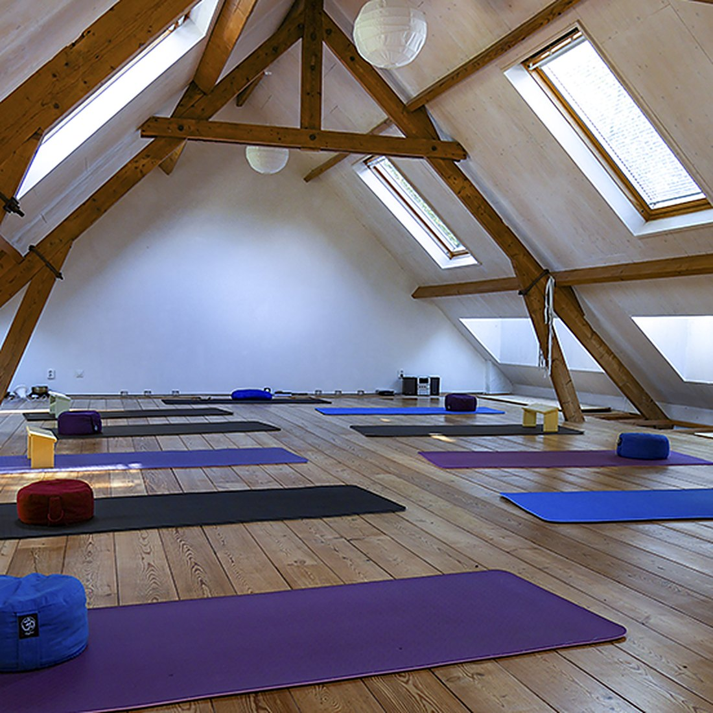
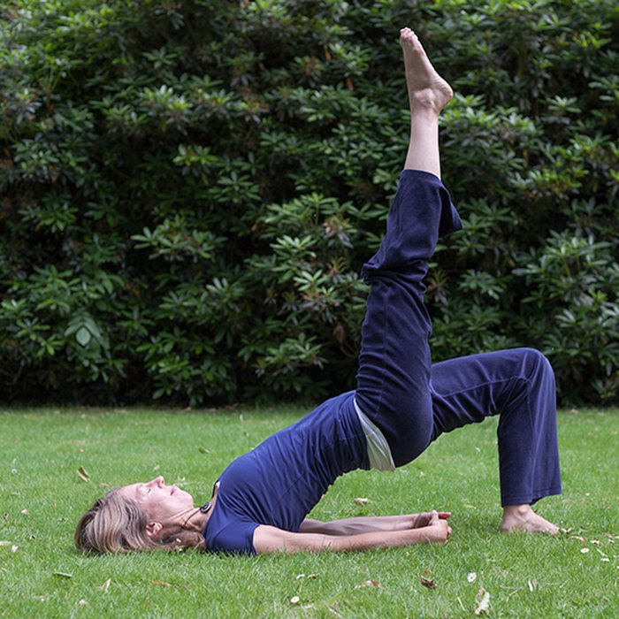
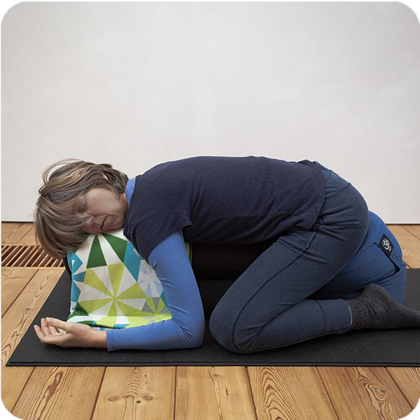
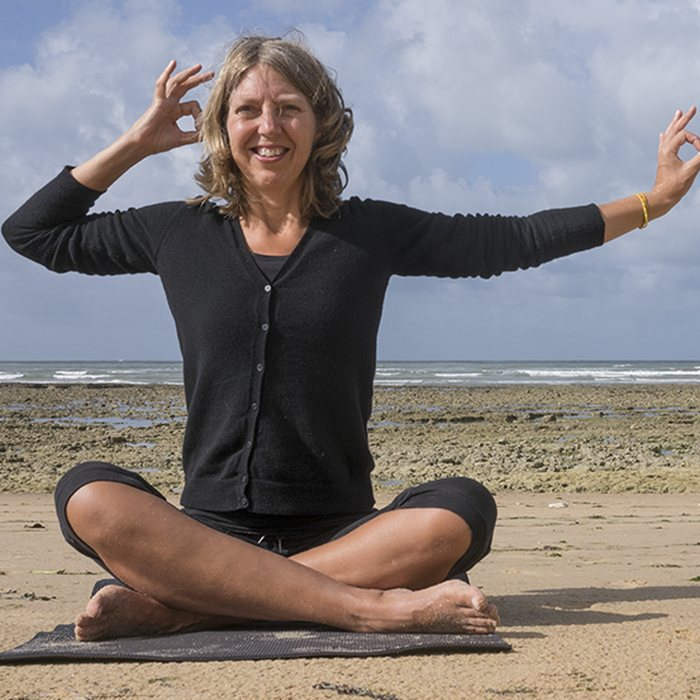
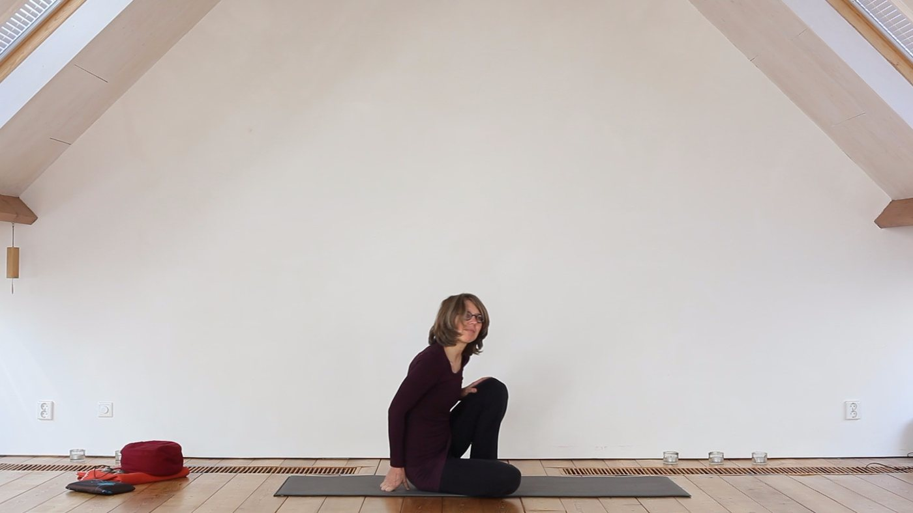
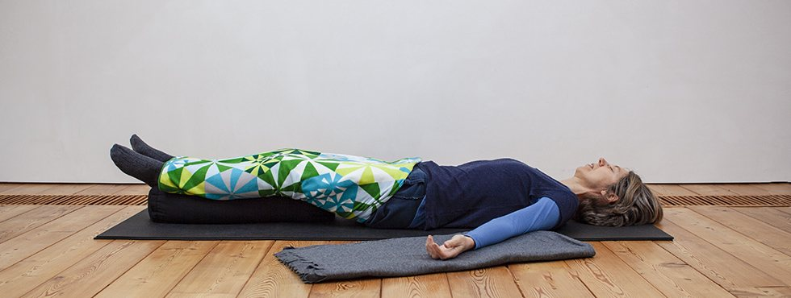
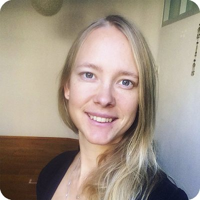
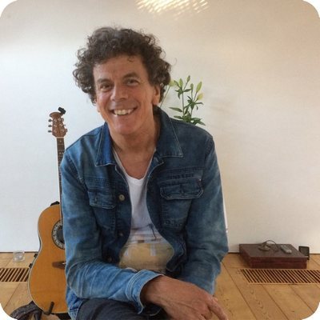

Hatha-O Yoga
Odile · ma en do ochtend
Houdingen, ademhaling en ontspanning, met zorg voor je rug. Verschillende yogastijlen samen in één les.
75 min · € 14Meer info

Hatha-yoga, Lu Jong en meditatie in kleine groepen, op een lichte zolder in Breda. Odile geeft hier al sinds 1998 les, samen met een aantal fijne collega's.
Elke week, behalve in de schoolvakanties. Je kunt op elk moment instromen als er plaats is.

Houdingen, ademhaling en ontspanning, met zorg voor je rug. Verschillende yogastijlen samen in één les.

Tibetaanse helende yoga: 21 eenvoudige oefeningen op het ritme van je adem. Je hoeft niet lenig te zijn.

Zachte Hatha-yoga en daarna diep ontspannen, ondersteund door kussens en dekens.

Samen mediteren op maandagavond, en Sudarshan Kriya-ademmeditatie van Art of Living.

De lessen zijn op een lichte zolder met houten balken, aan de Saksen Weimarlaan in Zandberg. Matten, kussentjes en dekens liggen klaar. De groepen zijn klein, zodat er aandacht is voor jou.
"De rustgevende manier waarop Odile ons de yoga-oefeningen laat doen spreekt mij erg aan. Wanneer je lichamelijke klachten hebt en een bepaalde oefening niet kan doen heeft ze altijd een alternatief die je wel kan doen."
DebbyHatha-yoga"Weet je, sinds ik yoga doe is de rugpijn bijna weg. Ook op vakantie heb ik veel oefeningen gedaan. En dat na 15 jaar soms ondraaglijke pijn!"
MariekeHatha-yoga"In twee lessen kun je al goed voelen wat Lu Jong met je doet. Na de eerste les wist ik het eigenlijk al. Ik voelde me zo ontspannen en ik voelde dat ik weer rechtop liep vanuit mijn kracht."
MarijkeLu Jong"Mijn complimenten voor de manier waarop je de lessen geeft: met je mooie stem leg je alles heel goed uit en zie je het meteen waar een houding niet klopt. Ik ervaar, mede dankzij jouw yogalessen meer rust in mijn leven en dat is goud waard!"
AnoniemHatha-yoga"Na de yoga voel ik me meer ontspannen en voelt het alsof er minder 'knopen' in mijn lijf zitten. Ik krijg er meer rust door en voel het als een gemis als ik een keer verhinderd ben."
EllyHatha-yoga"Dank je wel voor je bijzondere les van gisteren. Oei, oei, wat was ik stijf hier en daar. Toen ik terug fietste had ik het gevoel dat ik meer lucht had dan gewoonlijk."
IreneLu JongReacties van cursisten, zoals ze op yogaatelier.nl staan.
Naast de wekelijkse lessen zijn er in het atelier workshops, cursussen en klankconcerten. Binnenkort:
Zaterdag 13:00 – 17:00 · Cindy Joan · € 55
27, 28 en 29 november · Suresh Kumar
29, 30 en 31 januari 2027 · Suresh Kumar

"Voor mij zijn yoga, meditatie en creativiteit de middelen om weer in contact te komen met mezelf. Dit deel ik dan ook van harte met iedereen om mij heen."
Ik ben Odile Schneider. Na de lerarenopleiding Beeldende Vorming werd ik nieuwsgierig naar de mens achter het schilderij. Naast het kunstzinnig bezig zijn zocht ik het contact met mijn lichaam, en volgde ik de Hatha-Raja-Yoga opleiding bij de Blikopener in Tilburg en de 4-jarige Dru-yoga opleiding.
Sinds 1998 geef ik yogales, en ik verbind daarin de stijlen die ik heb geleerd: van Aplomb-yoga en Yoga Nidra tot Lu Jong en Restorative yoga. Na 23 jaar alleen aan het roer deel ik deze plek sinds 2021 met collega's.


Verder geven Carin (meditatie op maandag) en Suresh (Art of Breathing) les in het atelier.
Laat weten welke les je wilt proberen, dan hoor je snel van Odile. Ook voor vragen, een privéles of het huren van de ruimte.
Bel of stuur een sms naar Odile, dan plannen we samen je proefles.